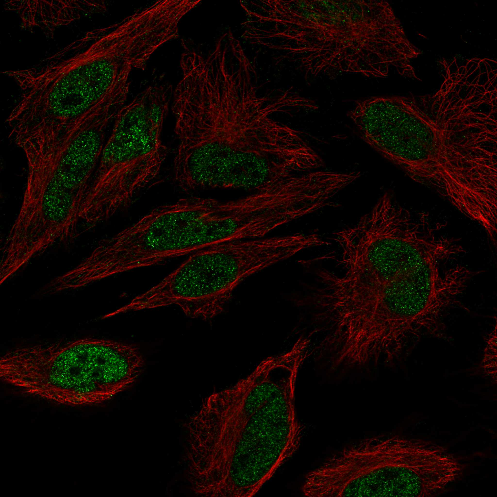

type: protein-evaluation gene: "TOPORS" date: 2026-06-01 tags: [protein-scout, nucleoplasm, evaluation] status: scored ---
TOPORS 核蛋白评估报告
1. 基本信息
| 项目 | 内容 |
|---|---|
| 基因名 / 别名 | TOPORS / LUN, TP53BPL |
| 蛋白全名 | E3 ubiquitin-protein ligase Topors |
| 蛋白大小 | 1045 aa / 119.2 kDa |
| UniProt ID | Q9NS56 |
2. 评分总览
| 维度 | 得分 | 新权重 | 加权后 | 关键证据摘要 |
|---|---|---|---|---|
| 核定位特异性 | 7/10 | x4 | 28.0 | UniProt Nucleus + PML body, GO nucleoplasm/nucleus/PML body/nuclear speck/centriole, HPA Nucleoplasm |
| 蛋白大小 | 2/10 | x1 | 2.0 | 1045 aa, 119.2 kDa，大型蛋白 |
| 研究新颖性 | 4/10 | x5 | 20.0 | PubMed strict=67, broad=97 |
| 三维结构 | 1/10 | x3 | 3.0 | AlphaFold pLDDT 49.0；PDB 无；<50 区域占 75.6% |
| 调控结构域 | 4/10 | x2 | 8.0 | RING-type Zn-finger E3 ligase + SUMO ligase，含 RING 域 |
| PPI 网络 | 3/10 | x3 | 9.0 | STRING TP53/TOP1/SUMO pathway；IntAct p53 + UBE2 家族；UniProt 仅 Rep68 |
| 加权总分 | 70/180** | |||
| 互证加分 | +0.0 | |||
| 归一化总分 (÷1.83) | 38.3/100** |
3. 详细分析
3.1 核定位证据
| 来源 | 定位 | 可信度 |
|---|---|---|
| UniProt | Nucleus, Nucleus PML body (subcellular location annotated, no evidence codes) | 中 |
| GO-CC | nucleoplasm (IDA:HPA), nucleus (IDA:UniProtKB), nuclear speck (IDA:UniProtKB), PML body (IDA:UniProtKB), centriole, ciliary basal body, spindle pole, midbody | 高（多 IDA 但定位分散） |
| HPA IF | Nucleoplasm (Supported 可靠性) | 中-高 |
| Literature | TOPORS 位于 PML nuclear bodies 和核质，作为 p53 的 E3 连接酶和 SUMO ligase 调控染色质修饰 | 中-高 |
HPA IF 状态: IF available -- HPA 可靠性 Supported，定位 Nucleoplasm（仅该定位）。

结论: TOPORS 有明确的核定位（UniProt + GO + HPA 一致指向 Nucleoplasm/PML body），但同时有多个非核 GO-CC 注释（centriole/ciliary body/spindle pole/midbody）。核定位特异性中等。
3.2 结构与数据源
| 指标 | 数值 |
|---|---|
| AlphaFold | AF-Q9NS56-F1 |
| 平均 pLDDT | 49.0 |
| pLDDT >90 | 11.2% |
| pLDDT 70-90 | 7.8% |
| pLDDT <50 | 75.6% |
| PDB | 无 |
AlphaFold PAE 状态: PAE 已下载。pLDDT 均值极低（49.0），<50 低置信区域高达 75.6%，为该批次中结构预测最差的蛋白。仅有 N 端 RING 域附近（~11% aa）pLDDT >90。无 PDB 实验结构。
3.3 研究现状
| 指标 | 数值 |
|---|---|
| PubMed strict (Title/Abstract) | 67 |
| PubMed broad | 97 |
| 别名 | LUN, TP53BPL（未用于 scoring） |
关键文献：
- PMID:39198387: "Inhibition of TOPORS ubiquitin ligase augments the efficacy of DNA hypomethylating agents through DNMT1 stabilization." (Nat Commun, 2024) -- DNMT1/DNA 甲基化
- PMID:39198401: "TOPORS E3 ligase mediates resistance to hypomethylating agent cytotoxicity in acute myeloid leukemia cells." (Nat Commun, 2024)
- PMID:38649616: "Concerted SUMO-targeted ubiquitin ligase activities of TOPORS and RNF4 are essential for stress management and cell proliferation." (Nat Struct Mol Biol, 2024)
- PMID:40239066: "PML mutants from arsenic-resistant patients reveal SUMO1-TOPORS and SUMO2/3-RNF4 degradation pathways." (J Cell Biol, 2025)
3.4 PPI 网络（三源综合）
| Partner | Source | Score/Evidence | Relevance |
|---|---|---|---|
| TP53 | STRING | 0.952 (exp 0.785) | p53 通路，E3 底物 |
| TOP1 | STRING | 0.939 (exp 0.644) | Topoisomerase I，互作命名来源 |
| UBE2I | STRING | 0.900 (exp 0.487) | SUMO E2 (UBC9) |
| SUMO1 | STRING | 0.869 (exp 0.467) | SUMO 修饰 |
| UBE2D1 | STRING | 0.829 (exp 0.696) | 泛素 E2 |
| TP53 | IntAct | Y2H fragment pooling (PMID:15710747) | p53 直接互作 |
| SATB1 | IntAct | Y2H (PMID:18408014) | 染色质组织者 |
| TOP1 | IntAct | pull down direct interaction | Topoisomerase I |
| Rep68 | UniProt | 3 experiments | AAV 蛋白 |
互作网络以 p53/TOP1/SUMO 通路为核心。STRING TP53 (exp 0.785) 和 TOP1 (exp 0.644) 的互作实验支持较好，SUMO E2 UBE2I 和 SUMO1 有中等实验支持。IntAct 含 TP53 (Y2H) 和 TOP1 (pull down direct) 两条关键互作。UniProt 互作记录极少（仅 Rep68）。
4. 总体评价
TOPORS 是 p53 和 TOP1 的 E3/SUMO 连接酶，核定位明确（PML body + nucleoplasm），文献量适中（strict=67）。主要劣势是 AlphaFold 预测极差（pLDDT 49.0, <50 占 75.6%）、无 PDB 实验结构、蛋白偏大（119 kDa）。与染色质调控的关联主要通过 p53 和 SUMO 通路，缺乏直接的染色质结合结构域。总分较低，适合作为低优先级候补。
5. 数据来源
- UniProt: https://www.uniprot.org/uniprotkb/Q9NS56
- AlphaFold: https://alphafold.ebi.ac.uk/entry/Q9NS56
- PubMed: https://pubmed.ncbi.nlm.nih.gov/?term=TOPORS
- Protein Atlas: https://www.proteinatlas.org/ENSG00000197579-TOPORS
HPA IF 图像已本地嵌入。
PAE 图像说明: AlphaFold PAE 图像已重新获取并嵌入（见下方 PAE 图像修正块）；结构判断仍结合 pLDDT 与 PAE 综合判断。
<!-- AF_PAE_REPAIR_START --> PAE 图像修正（2026-06-05）: AlphaFold 提供 predicted aligned error 图像；此前“PAE 图像暂无数据”的表述为未获取/未嵌入导致。

<!-- DOMAIN_HUMANPPI_REPAIR_START -->
Domain/SMART 与 humanPPI 补充（2026-06-07）
SMART / UniProt domain
| Source | Data |
|---|---|
| UniProt | Q9NS56 |
| SMART | SM00184; |
| UniProt Domain [FT] | 未检出显式 UniProt Domain feature |
| InterPro | IPR058745;IPR018957;IPR001841;IPR058746;IPR013083;IPR017907; |
| Pfam | PF26084;PF00097; |
humanPPI / HPA Interaction
Source: https://www.proteinatlas.org/ENSG00000197579-TOPORS/interaction
| Partner | Datasets | AF3/HPA structure |
|---|---|---|
| UBE2D1 | Intact, Biogrid | true |
| ABT1 | Bioplex | false |
| GPANK1 | Bioplex | false |
| H2AX | Biogrid | false |
| IKBKE | Biogrid | false |
| MTDH | Biogrid | false |
| NKX3-1 | Biogrid | false |
| PLK1 | Biogrid | false |
<!-- DOMAIN_HUMANPPI_REPAIR_END -->